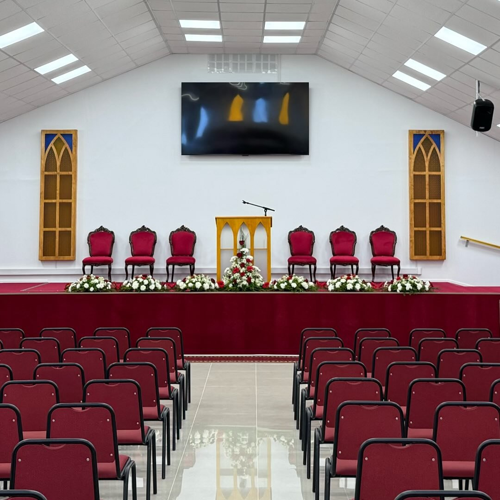

Domingo
- 10:30Escuela dominical
- 11:30Culto general
- 18:30Culto general
Iglesia evangélica pentecostal · 70 años en Quilpué
«Yo me alegré con los que me decían: A la casa de Jehová iremos.» Salmo 122:1
Somos una familia de fe en Quilpué que busca glorificar a Dios, anunciar a Jesucristo y servir a nuestro prójimo. Hay un lugar para ti.

¿Primera vez?
No necesitas conocer a nadie ni saber nada de antemano. Así es un domingo con nosotros.
Te recibirán en la entrada y te ayudarán a encontrar un asiento. La entrada está por Av. Los Carrera, a un costado del terminal de buses de Quilpué, con estacionamiento para los primeros 50 vehículos.
Cantamos juntos, oramos y escuchamos la predicación de la Biblia. Ven como te sientas cómodo.
Antes del culto de la mañana, a las 10:30, hay escuela dominical para todas las edades, con clases para niños.
Nos encantará conocerte. Si quieres oración o saber más de la iglesia, hermanos designados se acercarán a saludarte, o también puedes escribirnos por nuestras redes sociales.
Semana tipo
Los horarios pueden cambiar en fechas especiales. Síguenos en redes para enterarte.
Quiénes somos
En 2026 nuestra iglesia cumple 70 años. Desde 1956, generaciones de familias de Quilpué han encontrado aquí un lugar para conocer a Dios, crecer en la fe y servir a otros.
Somos parte de las Asambleas de Dios, una familia de iglesias pentecostales presente en todo el mundo. Creemos que el evangelio transforma vidas y familias, y queremos ser una luz para nuestra ciudad.
Las 16 verdades fundamentales de las Asambleas de Dios. Toca cada una para leer un resumen.
La Biblia es la Palabra de Dios, inspirada por Él, y la regla infalible de fe y conducta.
Un solo Dios eterno que se ha revelado como Padre, Hijo y Espíritu Santo.
Jesús es el Hijo eterno de Dios: nació de una virgen, vivió sin pecado, murió, resucitó y está a la diestra del Padre.
El ser humano fue creado bueno, pero por su desobediencia entró el pecado y la separación de Dios.
La única esperanza es la obra de Cristo en la cruz: la salvación se recibe por gracia, mediante el arrepentimiento y la fe.
El bautismo en agua por inmersión y la Santa Cena, en memoria de la muerte del Señor.
Una promesa para todo creyente, que da poder para vivir y servir.
El bautismo en el Espíritu Santo se manifiesta primero al hablar en otras lenguas, según el Espíritu da.
Separarse del mal y consagrarse a Dios, creciendo cada día a la imagen de Cristo.
La iglesia es el cuerpo de Cristo: existe para adorar a Dios, edificar a los creyentes y anunciar el evangelio a todos.
Dios llama y capacita a personas para guiar a la iglesia en su misión.
La sanidad de los enfermos está incluida en la obra redentora de Cristo y es un privilegio de los creyentes.
La resurrección de los que murieron en Cristo y el arrebatamiento de la iglesia a su encuentro.
La segunda venida de Cristo con sus santos y su reinado de mil años sobre la tierra.
Habrá un juicio final en que los muertos serán resucitados y juzgados según sus obras.
Esperamos, según su promesa, cielos nuevos y tierra nueva donde mora la justicia.
Participa
Cada ministerio es una forma de crecer en la fe y de servir junto a otros.
Estudio de la Biblia por edades, para niños, jóvenes y adultos.
Domingo · 10:30
Músicos y cantantes que guían a la iglesia en la adoración cada domingo.
Cultos del domingo
Un espacio para que los jóvenes crezcan en la fe, compartan y sirvan.
Sábado · 18:00
Mujeres que se reúnen para orar, estudiar la Palabra y acompañarse.
Jueves · 16:00
Hombres comprometidos con su fe, su familia y la iglesia.
Sábado · 18:00
Nos reunimos a orar por la iglesia, las familias y la ciudad.
Martes · 19:00
Desde donde estés
En ocasiones especiales transmitimos en vivo o grabamos el culto y lo publicamos en YouTube. Síguenos para enterarte de las próximas transmisiones y actividades.
Estamos para ti
Escríbenos con confianza: oraremos por ti y, si quieres, un hermano de la iglesia se pondrá en contacto contigo.
Visítanos
La entrada está por Av. Los Carrera, a un costado del terminal de buses de Quilpué. Contamos con estacionamiento.